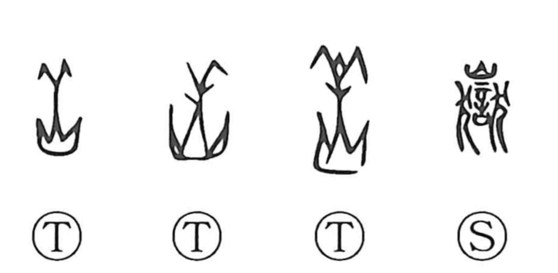

岳

Kun: take, yama | On: gaku
mountain peak ・ lofty mountain ・ sacred mountain
Explanation
In its earliest form, this character depicts the head of a sheep set above a mountain, a pictorial emblem of a revered peak. 岳 was an old appellation for the mountain now known as Songshan (嵩山), in a region once inhabited by the Qiang (Jiang) people, who were pastoralists. Songshan’s tutelary deity was said to be Bo Yi, regarded as the founding ancestor of the Jiang clan (姜). The graphic fusion of sheep and mountain reflects the mythic view of the summit as a sacred domain of a sheep‑herding people. From this venerable graph, the character 獄 later arose as a phono-semantic formation with 岳 supplying the sound.